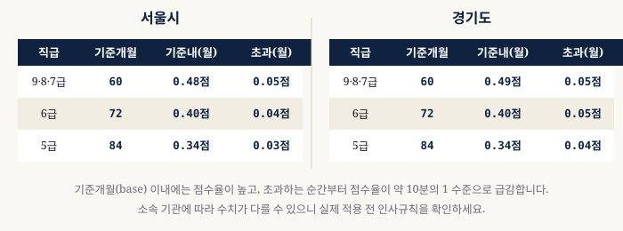
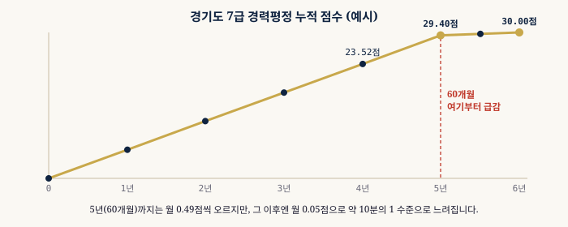

경력평정 가이드 · 5단계로 이해하기
경력평정 30점, 어떻게 계산될까요?
경력평정은 근무성적평정(70점)과 함께 평정점수의 핵심 축입니다. 오래 근무할수록 오르지만, 계산 방식과 포화 구간을 모르면 승진 타이밍을 놓치기 쉽습니다. 아래 5단계를 순서대로 따라가며 이해해보세요.
경력평정 30점 + 근평 70점 + 가점 5점 = 105점
1
경력평정이란?
경력평정은 승진후보자명부를 작성할 때 근무 기간에 따라 부여하는 점수입니다. 근무성적평정(70점 만점)과 함께 평정점수의 핵심 축을 이루며, 경력평정 만점은 30점입니다.
오래 근무할수록 점수가 올라가는 구조이지만, 휴직 유형에 따라 산입 여부가 달라지기 때문에 단순 재직 기간과는 다를 수 있습니다.
2
산정 구조 — 현 직급 + 직전 직급
경력평정은 현 직급 경력과 직전 직급 경력을 합산해 단일 점수율로 환산합니다. 직전 직급 경력은 60% 환산 후 현 직급 경력에 합산하고, 합산된 가중 경력 개월수에 직급별 점수율을 적용합니다.
| 구분 | 처리 방법 |
|---|---|
| 현 직급 경력 | 100% 그대로 산입 |
| 직전 직급 경력 | 60% 환산 후 합산 |
| 합산 가중 경력 | 직급별 점수율 적용 → 경력평정 산출 |
※ 잔여일 합산(현 직급 잔여일 + 직전 직급 60% 환산 잔여일)이 15일 이상이면 1개월로 올림 처리합니다.
3
직급별 점수율 및 환산 공식
경력평정은 직급별로 기준 개월수(base)까지는 높은 점수율을, 초과분에는 낮은 점수율을 적용합니다. 서울시·인천시·경기도 기준은 아래와 같습니다.
| 지역 | 직급 | base (개월) | 이하 점수율 | 초과 점수율 |
|---|---|---|---|---|
| 서울 | 9·8·7급 | 60개월 | 0.48점/월 | 0.05점/월 |
| 서울 | 6급 | 72개월 | 0.40점/월 | 0.04점/월 |
| 서울 | 5급 | 84개월 | 0.34점/월 | 0.03점/월 |
| 경기도 | 9·8·7급 | 60개월 | 0.49점/월 | 0.05점/월 |
| 경기도 | 6급 | 72개월 | 0.40점/월 | 0.05점/월 |
| 경기도 | 5급 | 84개월 | 0.34점/월 | 0.04점/월 |
📌 예시 — 서울시 8급, 현 직급 36개월 + 직전 직급 24개월
직전 직급 60% 환산: 24개월 × 0.6 = 14개월합산: 36 + 14 = 50개월 → 50 × 0.48 = 경력평정 24.00점

4
휴직 유형별 경력 산입 여부
모든 휴직 기간이 경력으로 인정되는 것은 아닙니다. 휴직 사유에 따라 전부 산입, 일부 산입, 미산입으로 나뉩니다.
| 휴직 유형 | 산입 여부 |
|---|---|
| 공무상 질병·부상 휴직 | 전부 산입 |
| 병역 휴직 | 전부 산입 |
| 육아 휴직 (자녀 1명, 최초 1년) | 전부 산입 |
| 일반 질병 휴직 | 미산입 |
| 가사 휴직 (간호 등) | 미산입 |
| 자기 개발 휴직 | 미산입 |
⚠️ 휴직 유형 및 산입 기준은 기관별 인사규칙에 따라 일부 다를 수 있습니다. 정확한 사항은 소속 인사담당 부서에 확인하세요.
5
경력이 쌓일수록 점수가 덜 오르는 이유
경력평정은 초반에 빠르게 오르다가 일정 기간(base)을 넘으면 증가폭이 크게 줄어드는 구조입니다. 경기도 7급을 예로 들면, 60개월(5년)까지는 월 0.49점씩 오르지만, 60개월을 넘는 순간부터 월 0.05점으로 약 10분의 1 수준으로 급감합니다.
| 가중 경력 | 경력평정 | 월 증가폭 |
|---|---|---|
| 1년 (12개월) | 5.88점 | +0.49점/월 |
| 2년 (24개월) | 11.76점 | +0.49점/월 |
| 3년 (36개월) | 17.64점 | +0.49점/월 |
| 4년 (48개월) | 23.52점 | +0.49점/월 |
| 5년 (60개월) — 기준점 | 29.40점 | +0.49점/월 |
| 5년 6개월 (66개월) | 29.70점 | +0.05점/월 |
| 6년 (72개월) — 만점 | 30.00점 | +0.05점/월 |
💡 60개월(5년) 이후에는 만점(30점)까지 12개월을 더 채워야 0.60점만 올라갑니다. 사실상 60개월이 경력평정의 실질적 포화 시점이므로, 승진을 노린다면 5년 전후 타이밍이 핵심입니다.

내 경력평정 점수가 궁금하신가요?
임용일과 평정 기준일만 입력하면 자동으로 계산해드립니다.